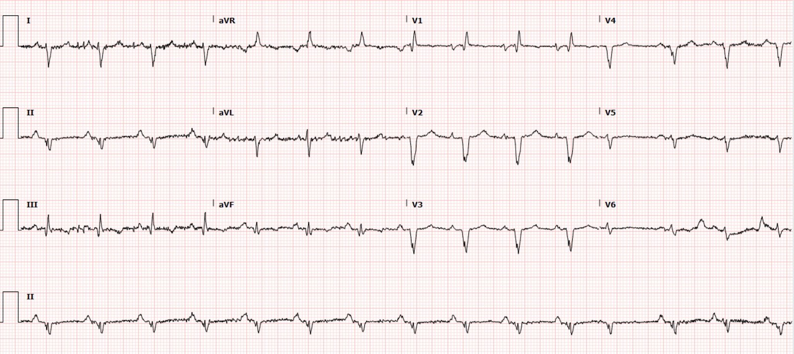
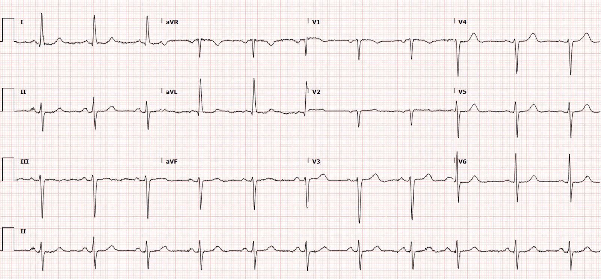
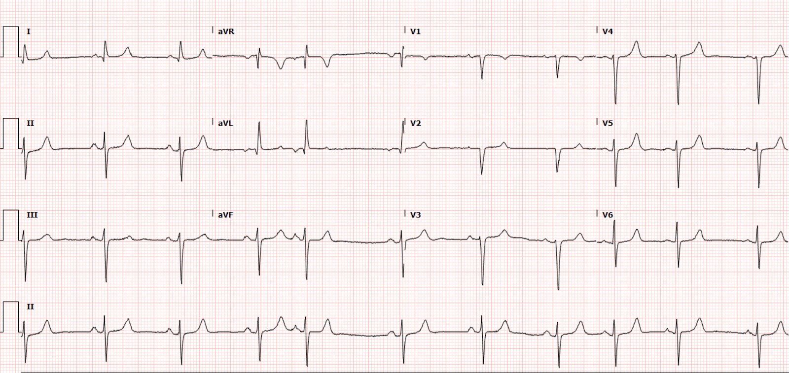
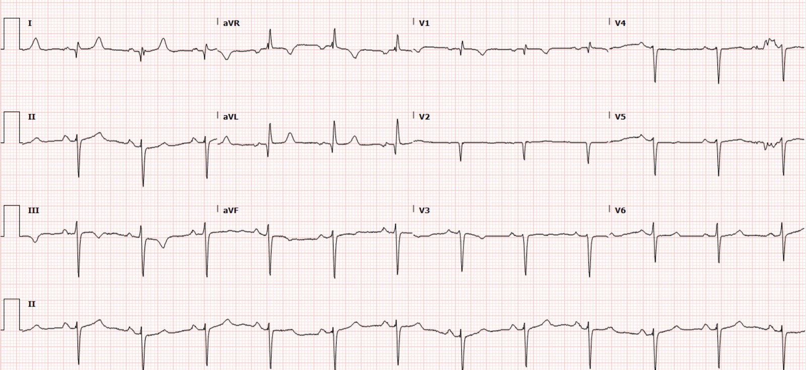
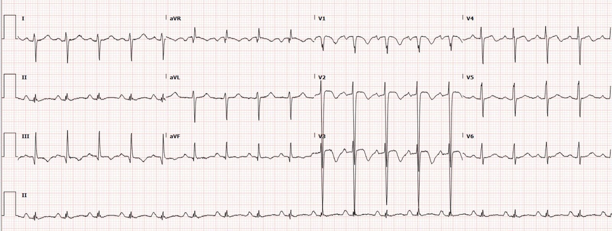
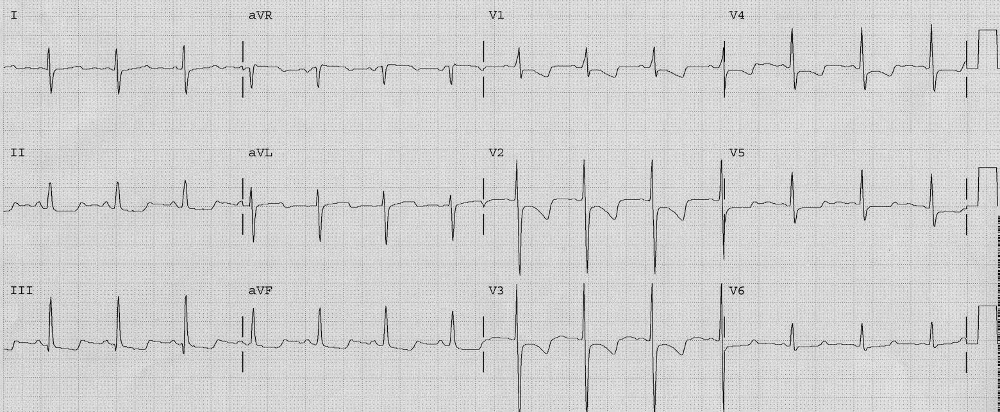
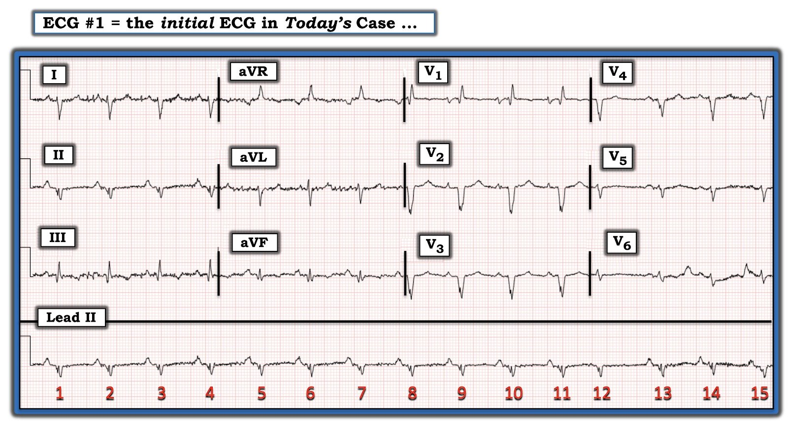
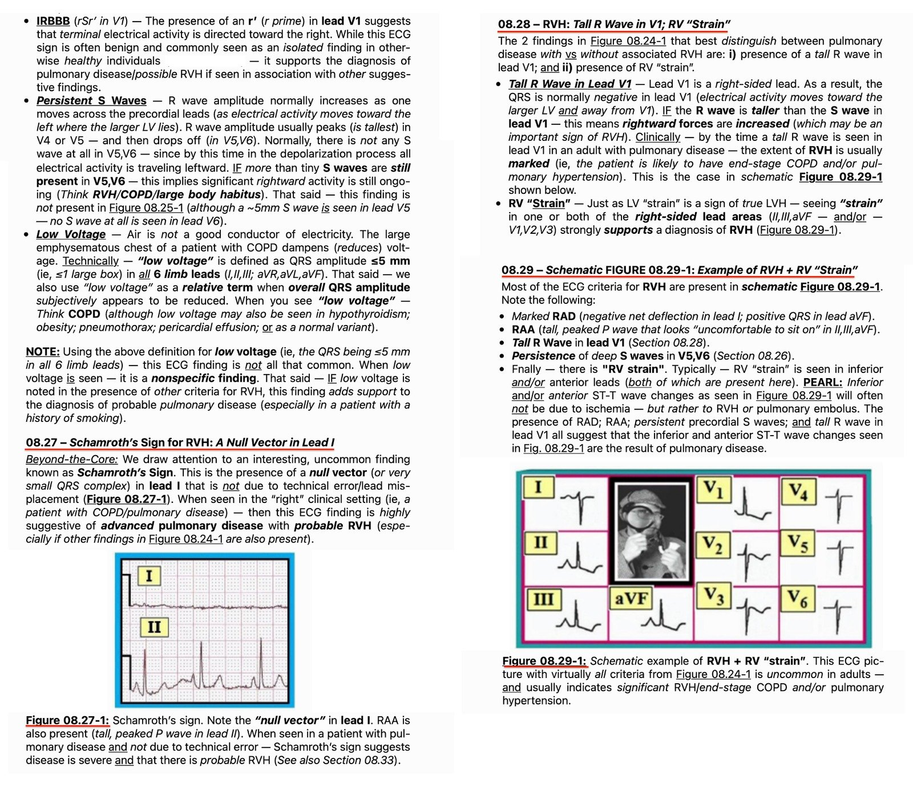
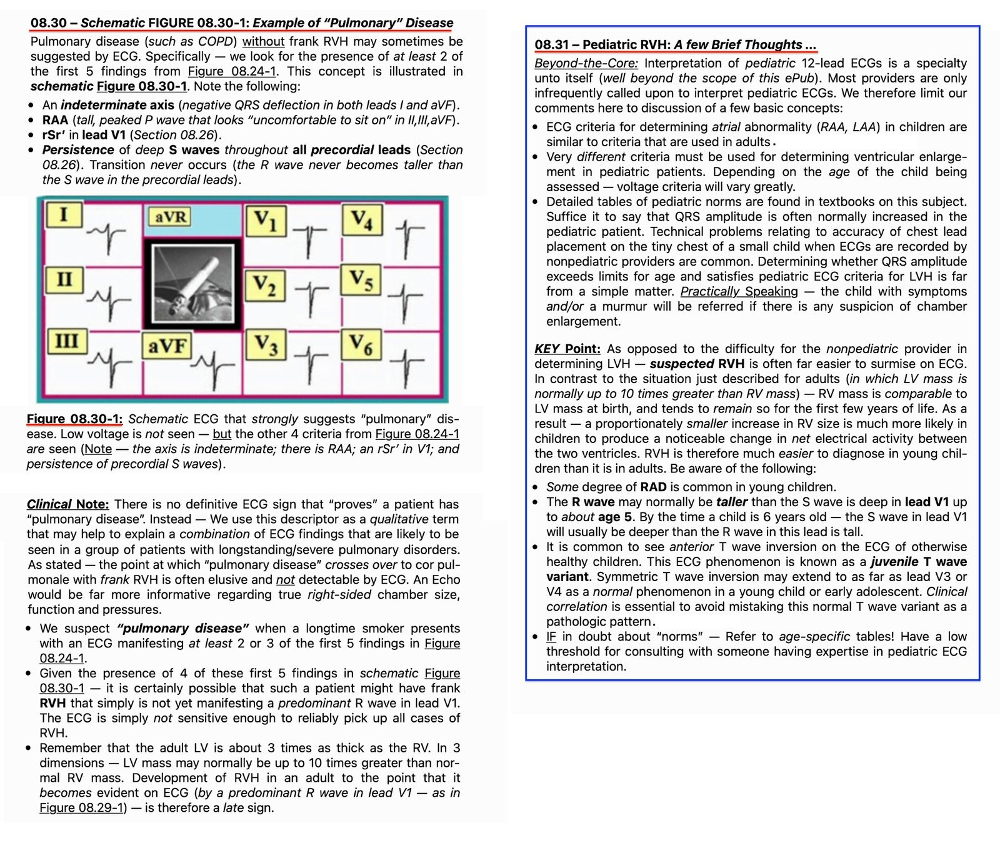
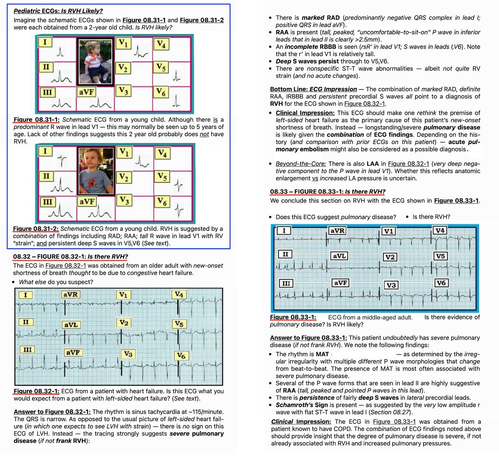

06/03/2022 — Một phụ nữ lớn tuổi khó thở và một điện tâm đồ giúp hiểu rõ tình trạng này
Bản dịch tiếng Việt của bài "An elderly woman with shortness of breath and an ECG that helps understand it" – Dr. Smith’s ECG Blog. Giữ nguyên toàn bộ 20 hình ảnh của bản gốc.
Bài viết của Pendell Meyers, Smith và Grauer biên tập
Một trong những bác sĩ nội trú tuyệt vời của tôi mang đến cho tôi một điện tâm đồ trong ca trực và hỏi tôi diễn giải thế nào mà không cho biết bất kỳ bối cảnh nào:


Tôi trả lời rằng trông giống phì đại thất phải mạn tính. Lý do là hình dạng và trục QRS, bao gồm hình ảnh RBBB không hoàn toàn ở V1, tăng tiến sóng R đảo ngược ở chuyển đạo trước tim, sóng S sâu tương ứng ở các chuyển đạo hướng trái I và aVL, trục chuyển đạo chi lệch rất nhiều sang phải kèm sóng R ở aVR. Xem bình luận của Ken Grauer bên dưới, trong đó ông chỉ ra rằng sóng P cao ở chuyển đạo II là dấu hiệu chẩn đoán lớn nhĩ phải, điều này cũng ủng hộ RVH.
Bệnh nhân là một phụ nữ 80 mấy tuổi có tiền sử cuồng nhĩ, suy tim sung huyết, bệnh thận giai đoạn cuối (ESRD) đang chạy thận nhân tạo, được xe cấp cứu đưa đến khoa cấp cứu (ED) vì khó thở tăng dần, buồn nôn, nôn, tiêu chảy trong 2-3 ngày, và bỏ lỡ buổi lọc máu do các triệu chứng này. Đội cấp cứu ngoài viện (EMS) thấy bà trong tình trạng suy hô hấp, huyết áp tụt còn 70/50 mm Hg và giảm oxy máu còn 87% khi thở khí trời. Không có tiền sử rối loạn chức năng tim phải, và siêu âm tim cách đây 4 năm cho thấy chức năng tim phải bình thường.
Siêu âm tim tại giường được thực hiện và cho thấy tăng gánh tim phải nặng, nhĩ phải và thất phải giãn nặng, kèm phân suất tống máu thất phải (RV EF) rất kém.
Chụp CT mạch máu ngực không thấy thuyên tắc phổi.
Bệnh nhân cần dùng thuốc vận mạch và hỗ trợ hô hấp, và được nhập đơn vị hồi sức tích cực (ICU).
Siêu âm tim chính thức ngày hôm sau cho thấy:
phì đại đồng tâm thất trái nhẹ
chức năng thất trái tăng động, EF 70%
không có rối loạn vận động thành (WMA) theo từng vùng
Thất phải giãn nặng, chức năng tâm thu giảm nặng
Nhĩ phải giãn nặng, hở van ba lá (TR) mức độ vừa
Áp lực tâm thu đỉnh động mạch phổi ước tính: 67 mm Hg
So với lần siêu âm trước cách đây 4 năm, suy tim phải là mới xuất hiện
Dưới đây là các điện tâm đồ của bà trong những năm trước, theo trình tự thời gian, cho thấy diễn tiến từ bình thường đến RVH:
4 năm trước:


3 năm trước:


1 năm trước:


Lần khám hiện tại:
Hãy so sánh các ví dụ phì đại thất phải mạn tính này với tăng gánh tim phải cấp! Dưới đây là các bản ghi không kèm nhãn, hãy xem từng bản và quyết định đó là cấp hay mạn:






Tăng gánh tim phải cấp (cả hai đều do PE cấp):
Phì đại thất phải mạn tính:
Những điểm cần học:
Các dấu hiệu điện tâm đồ của RVH có thể bao gồm sóng R lớn ở các chuyển đạo trước tim bên phải (V1-V3), sóng S sâu ở chuyển đạo I, trục lệch phải, hình dạng blốc nhánh phải không hoàn toàn và tỷ lệ R/S lớn ở V1.
Thường thì QRS bất thường của RVH sẽ gây ra độ lệch ST và sóng T đảo ngược ngược hướng phù hợp, chẳng hạn STD hoặc TWI ở V1-V3 được giải thích bởi RVH (chứ không phải do OMI thành sau chẳng hạn!).
Tăng gánh tim phải cấp rất khác với phì đại thất phải mạn tính.
Phì đại thất phải mạn tính đi kèm áp lực động mạch phổi rất cao và có những hậu quả sinh lý cực kỳ nghiêm trọng.
Phì đại thất phải mạn tính kèm tăng áp phổi thường bị các bác sĩ cấp cứu bỏ sót và, nếu không được nhận ra, các can thiệp y khoa (chẳng hạn truyền dịch tĩnh mạch hoặc đặt nội khí quản thở máy áp lực dương) có thể dẫn đến tử vong!
Điện tâm đồ thường là chìa khóa để nhận ra RVH, và rất hữu ích để phân biệt tăng gánh thất phải cấp với RVH mạn tính. Điều này quan trọng vì cách xử trí khác nhau.
Xem các bài khác bàn về RVH, các hình ảnh giả, v.v.:
21 year old woman with CP, SOB, then syncope, and with ST depression with T-wave inversion in V1-V3 (Phụ nữ 21 tuổi đau ngực, khó thở, sau đó ngất, kèm ST chênh xuống và sóng T đảo ngược ở V1-V3)
Chronic Right Ventricular Hypertrophy, or Acute Right Heart Strain? The ECG Helps Make the Diagnosis. (Phì đại thất phải mạn tính hay tăng gánh tim phải cấp? Điện tâm đồ giúp chẩn đoán.)
55 year old woman with chest pain and precordial T-wave Inversions (Phụ nữ 55 tuổi đau ngực và sóng T đảo ngược ở chuyển đạo trước tim)
A 50-something male with Dyspnea (Nam giới 50 mấy tuổi khó thở)
ST Depression and T-wave inversion in V2 and V3. (ST chênh xuống và sóng T đảo ngược ở V2 và V3.)
Young Woman with history of repaired Tetralogy of Fallot presents with chest pain (Phụ nữ trẻ có tiền sử phẫu thuật sửa tứ chứng Fallot đến khám vì đau ngực)
ST Depression and T-wave Inversions after ROSC from Resp and Cardiac Arrest after Head Trauma (ST chênh xuống và sóng T đảo ngược sau ROSC do ngừng thở và ngừng tim sau chấn thương đầu)
A 30-something woman with chest pain and h/o pulmonary hypertension due to chronic pulmonary emboli (Phụ nữ 30 mấy tuổi đau ngực, có tiền sử tăng áp phổi do thuyên tắc phổi mạn tính)
55 year old woman with chest pain and precordial T-wave Inversions (Phụ nữ 55 tuổi đau ngực và sóng T đảo ngược ở chuyển đạo trước tim)
Syncope, Hypotension, and a Large Right Ventricle — What is the ECG Diagnosis? (Ngất, tụt huyết áp và thất phải lớn — Chẩn đoán điện tâm đồ là gì?)
A large R-wave in lead V1. And why is the PR interval not short? (Sóng R lớn ở chuyển đạo V1. Và vì sao khoảng PR không ngắn?)

===================================
BÌNH LUẬN CỦA TÔI, bởi KEN GRAUER, MD (6/3/2022):
===================================
Một ca thú vị do Dr. Meyers trình bày. Tôi sẽ tập trung bình luận vào điện tâm đồ ban đầu đã được đưa cho Dr. Meyers — mà tôi trình bày lại ở Hình 1. Có một số lý do khiến đây là một điện tâm đồ cực kỳ khó diễn giải khi không có lợi thế của bất kỳ bối cảnh lâm sàng nào. Bao gồm:
- Có nhiễu đường nền và nhiễu do cử động đáng kể. Nhiễu này có vẻ rõ nhất ở các chuyển đạo I, III và aVL — gợi ý “chi thủ phạm” chính là Tay Trái (Để ôn lại cách xác định nhanh chi gây ra nhiễu — Vui lòng xem Bình luận của tôi ở cuối trang trong bài ngày 27 tháng Chín năm 2019 của Dr. Smith’s ECG Blog).
- Như Dr. Meyers đã nhận định sắc sảo — điện tâm đồ ban đầu này gợi ý RVH (phì đại thất phải — Right Ventricular Hypertrophy).
- Có những đặc điểm không điển hình làm phức tạp việc chẩn đoán.
LƯU Ý: Trước đây tôi đã ôn lại các Điểm then chốt & Cạm bẫy trong chẩn đoán điện tâm đồ RVH (Xem Bình luận của tôi ở cuối trang trong bài ngày 1 tháng Chín năm 2020 trên Dr. Smith’s ECG Blog). Để rõ ràng — tôi đã trích một số trang từ ECG-2014-ePub của tôi tóm tắt chẩn đoán điện tâm đồ đầy thách thức này ở Hình 2 đến 5 bên dưới.


Hình 1: Điện tâm đồ được đưa cho Dr. Meyers mà không có lợi thế của bất kỳ bệnh sử nào (Xem phần bài viết).
SUY NGHĨ CỦA TÔI về điện tâm đồ ở Hình 1:
Nhịp là nhịp xoang khoảng ~85 lần/phút — kèm một PAC ( = nhát #12). Khoảng PR bình thường. Mặc dù QRS trông có vẻ rộng ở các chuyển đạo V2, V3 — theo đo đạc của tôi, QRS không kéo dài (tức là không quá 0,10 giây). QTc có lẽ ở giới hạn trên của bình thường.
- Có RAD (trục lệch phải — Right Axis Deviation) rõ rệt — được xác định bởi QRS âm ưu thế ở chuyển đạo I.
- Có hình ảnh qR ở chuyển đạo V1 — rõ ràng là bất thường. Tiêu chuẩn IRBBB (blốc nhánh phải không hoàn toàn — Incomplete Right Bundle Branch Block) được thỏa mãn — vì ngoài hình ảnh qR ở chuyển đạo V1 — còn có sóng S tận ở các chuyển đạo bên I và V6.
- Bình thường, khi QRS hẹp — QRS phải âm ưu thế ở chuyển đạo V1. QRS dương ưu thế (như thấy ở Hình 1) — gợi ý khả năng RVH, nhất là khi có RAD rõ rệt trên bản ghi này.
- Như Dr. Meyers đã nêu — các đặc điểm khác ủng hộ RVH gồm thiếu sóng R ở các chuyển đạo ngực, với sóng S tồn tại kéo dài đến tận chuyển đạo V6.
- Một đặc điểm khác ủng hộ RVH — là sự hiện diện của RAA (bất thường nhĩ phải — Right Atrial Abnormality). Đó là vì tình trạng duy nhất trong y khoa gây lớn nhĩ phải mà không đồng thời gây RVH là hẹp van ba lá. Bình thường, RAA được chẩn đoán khi thấy sóng P cao, nhọn và có đỉnh nhọn ở từng chuyển đạo thành dưới (cao ít nhất 2,5 mm ở ≥1 chuyển đạo thành dưới). Mặc dù sóng P không thỏa mãn chặt chẽ tiêu chuẩn này trên điện tâm đồ #1 — sóng P ở chuyển đạo II rõ ràng nhọn hơn mức thường thấy — và — sóng P dương đỉnh nhọn có thấy ở các chuyển đạo V2 và V3, điều mà trong bối cảnh các dấu hiệu gợi ý RVH khác ở trên, là thêm bằng chứng ủng hộ chẩn đoán này!
- Cuối cùng — sự hiện diện của hình ảnh qR ở chuyển đạo V1 ở bệnh nhân RVH là dấu hiệu chỉ điểm tăng áp phổi đáng kể, thường kèm tăng nguy cơ tử vong (Waligóra và cs.: J Electrocardiol — 50(4): 476-483, 2017).
Dấu hiệu Không điển hình …
Không chỉ có sóng Q lớn đến bất ngờ ở mỗi chuyển đạo thành dưới (so với biên độ sóng R ở các chuyển đạo này) — mà QRS ở chuyển đạo II còn phân mảnh (tức là Ta thấy một sóng Q ban đầu ở chuyển đạo II — rồi một nỗ lực hình thành sóng R, chỉ để kết thúc bằng một sóng S sâu hoặc có lẽ là phần tiếp nối của sóng Q ở chuyển đạo II?).
- Theo kinh nghiệm của tôi — kiểu “phân mảnh” này ở các chuyển đạo thành dưới có tương quan rất cao với nhồi máu thành dưới vào một thời điểm nào đó. Chắc chắn đây không phải là dấu hiệu mong đợi ở RVH.
- Về mặt kỹ thuật — điện tâm đồ ở Hình 1 cho thấy hình ảnh S1Q3T3. Và có sóng T đảo ngược ở cả hai chuyển đạo III và aVF. Dù vậy — tôi không biết liệu dấu hiệu này trong bối cảnh điện tâm đồ này đại diện cho “tăng gánh” thất phải — thuyên tắc phổi vào một thời điểm nào đó — thiếu máu cục bộ liên quan đến nhồi máu thành dưới vào một thời điểm nào đó — hay — một sự kết hợp nào đó của những điều trên.
ĐIỀU CỐT LÕI: Tôi hoàn toàn đồng ý với Dr. Meyers rằng chẩn đoán thống nhất cho điện tâm đồ ở Hình 1 là RVH, nhiều khả năng kèm tăng áp phổi đáng kể. Các thay đổi ST-T không có vẻ cấp tính — nên hy vọng lọc máu kịp thời có thể điều trị hiệu quả vấn đề cấp tính của bà.
=================================
Dưới đây ở Hình 2 đến 5 — “Quan điểm của tôi” về chẩn đoán RVH trên điện tâm đồ (trích từ Grauer K: ECG-2014-ePub).






